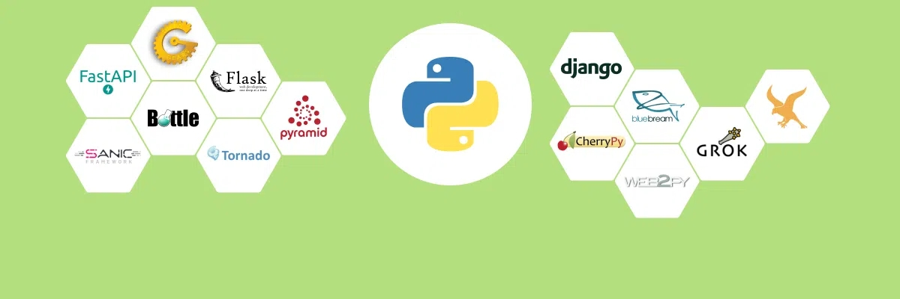
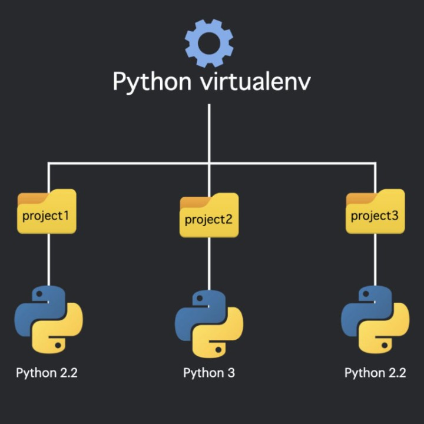
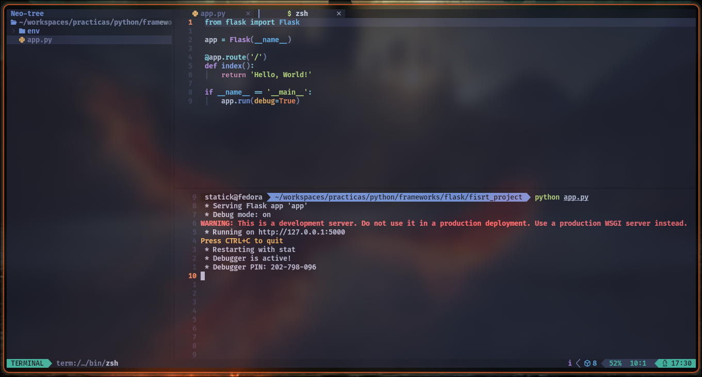
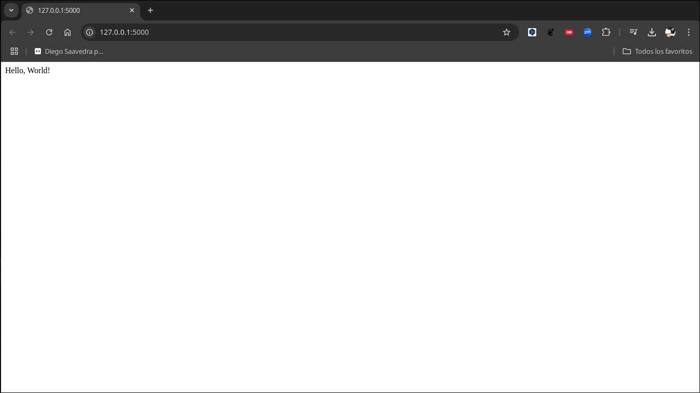
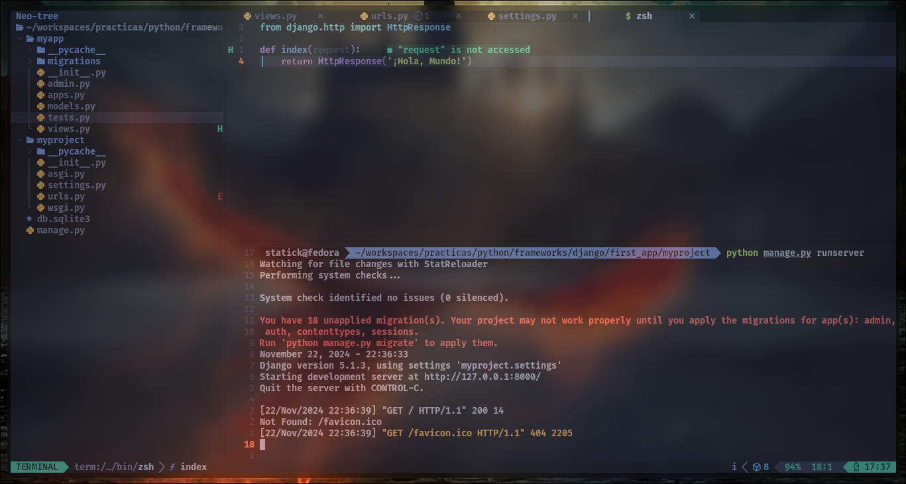
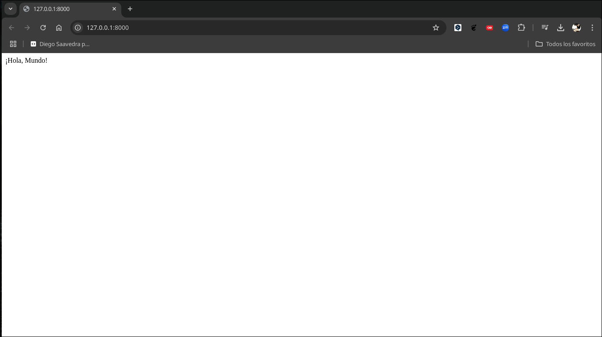
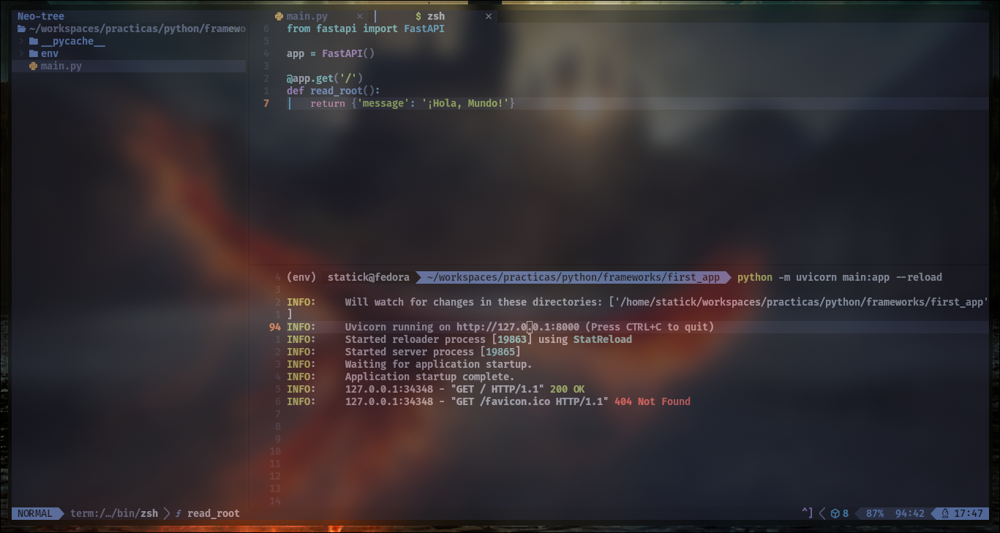
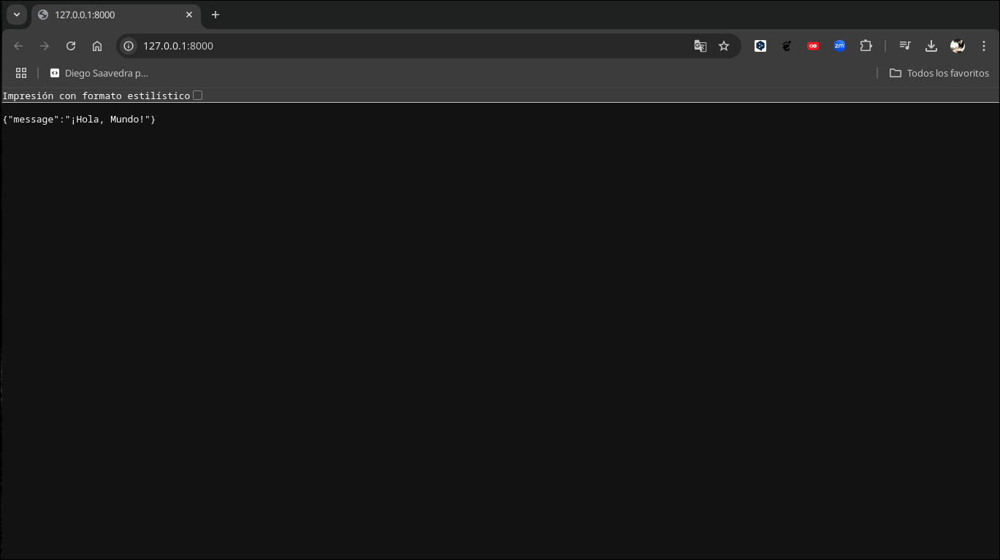

Introducción a los Frameworks en Python

Los frameworks son herramientas que facilitan el desarrollo de aplicaciones web al proporcionar una estructura y funcionalidades predefinidas. En Python, existen varios frameworks populares que permiten crear aplicaciones web de forma rápida y eficiente. Algunos de los frameworks más utilizados en Python son Flask, Django y FastAPI. En este tutorial, se presentarán estos frameworks y se mostrarán ejemplos de cómo crear aplicaciones web simples con cada uno de ellos.
Creación de Entornos Virtuales

Antes de comenzar a trabajar con los frameworks, es recomendable crear un entorno virtual para cada proyecto. Los entornos virtuales permiten aislar las dependencias de cada proyecto y evitar conflictos entre versiones de paquetes. A continución, se muestran los comandos para crear un entorno virtual con venv:
- Crea un nuevo directorio para el proyecto:
mkdir mi_proyecto
cd mi_proyecto- Crea un entorno virtual:
python -m venv env- Activa el entorno virtual:
- En Windows:
env\Scripts\activate- En macOS y Linux:
source env/bin/activateCon el entorno virtual activado, puedes instalar las dependencias específicas de tu proyecto sin afectar al sistema global de Python.
Flask

Flask es un microframework para Python que permite crear aplicaciones web de forma rápida y sencilla. A continuación, se muestra un ejemplo de una aplicación web simple que muestra un mensaje de bienvenida.
Ejemplo
- Instala Flask:
pip install Flask- Crea un archivo app.py con el siguiente contenido:
from flask import Flask
app = Flask(__name__)
@app.route('/')
def index():
return 'Hello, World!'
if __name__ == '__main__':
app.run(debug=True)En el ejemplo anterior, se crea una aplicación web con Flask que muestra el mensaje “Hello, World!” en la ruta raíz (/).
- Ejecuta la aplicación:
python app.py
En la captura de pantalla anterior, se muestra el código de la aplicación Flask que se ejecuta en el servidor de desarrollo.
- Abre un navegador web y accede a la dirección http://localhost:5000 para ver el mensaje de bienvenida.

Django

Django es un framework web de alto nivel para Python que facilita el desarrollo de aplicaciones web complejas. A continuación, se muestra un ejemplo de una aplicación web simple que muestra un mensaje de bienvenida.
Ejemplo
- Instala Django:
pip install Django- Crea un proyecto Django:
django-admin startproject myproject- Crea una aplicación dentro del proyecto:
cd myproject
python manage.py startapp myapp- Define una vista en el archivo views.py de la aplicación:
from django.http import HttpResponse
def index(request):
return HttpResponse('¡Hola, Mundo!')- Configura la URL en el archivo urls.py del proyecto:
from django.urls import path
from myapp import views
urlpatterns = [
path('', views.index),
]- Ejecuta el servidor de desarrollo:
python manage.py runserver- Abre un navegador web y accede a la dirección http://localhost:8000 para ver el mensaje de bienvenida.

En la captura de pantalla anterior, se muestra el código de la aplicación Django que se ejecuta en el servidor de desarrollo.

En la captura de pantalla anterior, se muestra el mensaje de bienvenida en el navegador web al acceder a la dirección http://localhost:8000.
FastAPI

FastAPI es un framework web moderno y rápido para Python que permite crear APIs de forma sencilla y eficiente. A continuación, se muestra un ejemplo de una API simple que devuelve un mensaje de bienvenida.
Ejemplo
- Instala FastAPI:
pip install fastapi- Crea un archivo main.py con el siguiente contenido:
from fastapi import FastAPI
app = FastAPI()
@app.get('/')
def read_root():
return {'message': '¡Hola, Mundo!'}En el ejemplo anterior, se crea una API con FastAPI que devuelve un diccionario con el mensaje “¡Hola, Mundo!” en la ruta raíz (/).
- Ejecuta la aplicación:
uvicorn main:app --reload- Abre un navegador web y accede a la dirección http://localhost:8000 para ver el mensaje de bienvenida.

En la captura de pantalla anterior, se muestra el código de la API FastAPI que se ejecuta en el servidor de desarrollo.

Conclusiones
En este tutorial, se presentaron algunos de los frameworks más populares para el desarrollo web en Python, incluyendo Flask, Django y FastAPI. Cada uno de estos frameworks tiene sus propias características y ventajas, por lo que es importante elegir el que mejor se adapte a tus necesidades y preferencias. Con estos frameworks, puedes crear aplicaciones web y APIs de forma rápida y sencilla, lo que te permitirá desarrollar proyectos web de manera eficiente y productiva. ¡Esperamos que este tutorial te haya sido útil y te inspire a explorar más sobre el desarrollo web en Python!